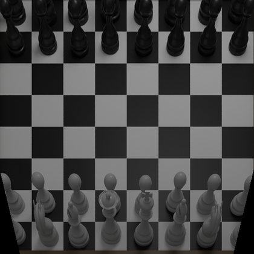
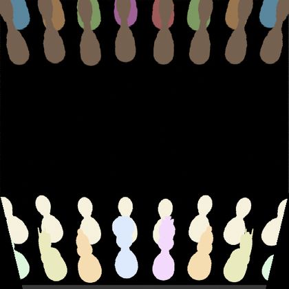
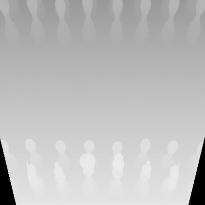
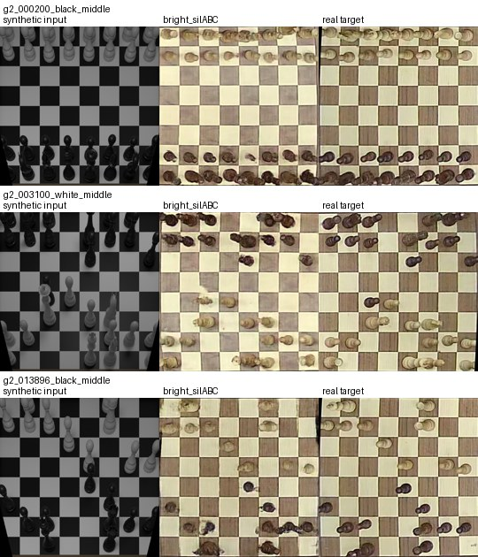
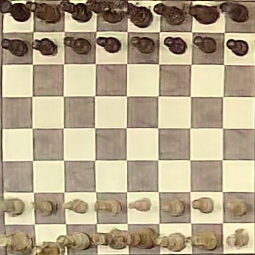
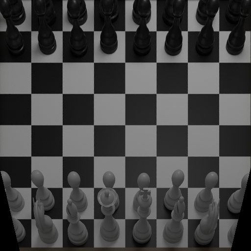
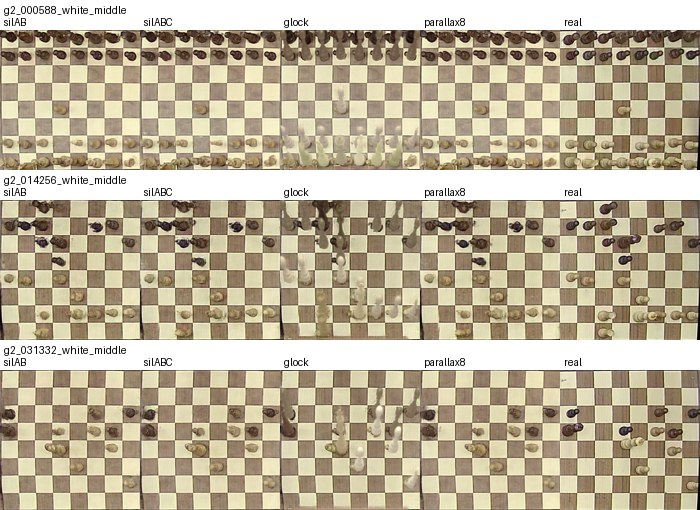

This project addresses chessboard image generation from a FEN position and a requested camera viewpoint. The required output is a clean synthetic chessboard image and a more realistic image that preserves the same board state. We treat the problem as controlled synthetic-to-real image translation. Early unpaired translation with CUT/CycleGAN produced realistic texture but did not reliably preserve exact board structure. The final system therefore uses a paired, pix2pixHD-style conditional generator augmented with chess-specific semantic and geometric conditioning from Blender: an RGB render, a FEN semantic layout, a rendered silhouette, a depth-like map, and piece-edge cues.
The selected checkpoint, chess_v5_bright_silABC, is trained on a camera-aligned Blender dataset with per-game oblique elevations of 38–44°. On 140 held-out game-2 boards it achieves 0.922 square accuracy, 0.992 occupancy accuracy, 0.804 occupied-piece type accuracy, and 0.757 whole-board occupancy exactness under an independent square classifier. Qualitatively, the model gives the best practical trade-off between realistic wooden-board appearance and board-state preservation — although piece topology artifacts remain a central limitation.
Four ideas that made it work
Paired, not unpaired
A pix2pixHD-style conditional translator with direct paired supervision — not CycleGAN or CUT, which moved pieces and hallucinated texture on empty squares.
21-channel conditioning
The generator sees 3 RGB + 15 one-hot FEN-silhouette segmentation + 3 geometry channels (depth, mask, edge) — all derived from the FEN alone at inference.
Camera geometry > loss tuning
Matching the synthetic camera to the real photos (per-game ~40.7° elevation vs. an old 54.9° global) shrank the domain gap more than any loss term.
An honest ceiling
Clean piece topology vs. photographic realism is a persistent trade-off under low-res automatic supervision — documented with quantitative and visual ablations.
From a FEN string to a realistic photo
The required function is generate_chessboard_image(fen, viewpoint). It renders a clean synthetic board with Blender, derives semantic and geometric control maps from that render, and feeds a 21-channel tensor to a conditional generator that outputs the realistic image. Crucially, every control map is derived from the FEN alone — no real photo is needed at inference.
The 21-channel input
The semantic map uses fen_silhouette mode: full-cell FEN information protects board occupancy, while rendered silhouette pixels give an accurate outline of visible piece shapes.
- 3Synthetic RGB — the oblique Blender render of the board.
- 15One-hot silhouette segmentation — empty light/dark squares + 12 piece classes, built from the FEN and the rendered silhouette.
- 3Geometry — depth-like render, piece-silhouette mask, and silhouette boundary (edge) channel.



Two discriminators keep both scales honest
A global multi-scale PatchGAN judges the whole board, while a local class-conditional piece-crop discriminator (96 px crops + one-hot piece label) puts extra pressure on occupied squares so small pieces stay legible.
The "silABC" loss recipe
On top of the paired GAN + feature-matching + VGG + masked-L1 objectives, three chess-specific loss groups give the model its name.
Silhouette semantics
Silhouette-shaped semantic conditioning that kills square halos and wood bleed onto empty cells.
Edge & piece L1
A silhouette-edge (Sobel) loss plus piece-weighted L1 for sharp, anti-halo piece outlines.
Local piece objectives
Class-conditional piece-crop GAN + feature-matching + VGG + a frozen square-classifier loss for legible small pieces.
Quantitative evaluation
All numbers are on 140 held-out boards from game 2 (training used games 4–7). A held-out game split tests generalization to unseen positions and viewpoints rather than memorizing one board sequence. The main evaluator is an independent ResNet-18 square classifier trained on real board crops.
⚖️ The selected model is not the winner of every scalar metric — a sibling run scores marginally higher on the classifier. Final selection used a stricter practical criterion: preserve a realistic appearance without milky or transparent piece artifacts. bright_silABC was the best overall visual trade-off.

Interactive: synthetic → realistic
Drag the handle to wipe between the clean synthetic input and the model's realistic translation of the same position. These are real held-out test boards.


Synthetic RealisticLeft = synthetic Blender render · Right = chess_v5_bright_silABC output. Compare against the real target in Figure 1 above.
Why each design choice survived
Improving board-state metrics alone is not enough: components that force exact geometry can remove double-heads but often destroy the photo-like style. We ran ablations and negative tests to justify the final design.
| Ablation | Hypothesis | Observed result | Decision |
|---|---|---|---|
| Silhouette-only semantics | Silhouettes should encode piece layout | High phantom rate; no whole-board exactness | Reject |
| Full-cell FEN + V5 geometry | FEN protects occupancy, geometry gives shape | Reached 1.0 occupancy on 16 probe boards | Keep |
| No piece classifier | Classifier loss might overfit / reward blobs | Some metrics up, but visual defects unsolved | Not final |
| Geometry lock | Hard source geometry prevents double-heads | Double-heads drop, but pieces look washed & synthetic | Reject |
| Two-stream / piece composite | Separate foreground & background generation | Style stayed OK; topology mostly unchanged | Not enough |
| Parallax-8 source stretch | Pieces are still too short / top-down | Worse occupancy & phantom rate; no double-head gain | Reject |
| Run | Square | Occupancy | Type | Whole-board | Phantom | Missing |
|---|---|---|---|---|---|---|
| bright_silAB | 0.9160 | 0.9924 | 0.7849 | 0.6429 | 0.0057 | 0.0109 |
| bright_silABC selected | 0.9221 | 0.9916 | 0.8040 | 0.7571 | 0.0057 | 0.0130 |
| silAB noPieceD | 0.9314 | 0.9942 | 0.8240 | 0.7643 | 0.0052 | 0.0068 |
| pcomp_srcshape | 0.9235 | 0.9955 | 0.7979 | 0.7929 | 0.0019 | 0.0090 |
| geometry lock | 0.6993 | 0.8738 | 0.3075 | 0.0000 | 0.0293 | 0.2991 |
| parallax8 fine-tune | 0.9094 | 0.9846 | 0.7879 | 0.4500 | 0.0167 | 0.0130 |

bright_silABC model.The key insight
Forcing exact geometry (geometry-lock) crushes whole-board exactness from 0.757 → 0.0 and makes pieces washed and milky; naive parallax stretching regressed it to 0.45. The remaining synthetic-to-real mismatch is not solved by a post-render geometric correction — matching the camera in the first place was what mattered.
An honest account
The selected model is a practical submission model, not a complete solution to realistic chess-piece synthesis. We report the failure modes as plainly as the wins.
✕ Unpaired translation
CUT/CycleGAN transferred wooden style but had no pairwise penalty for moving pieces or inventing texture on empty squares — unacceptable when the state must stay exact.
✕ Hard geometry locking
Injecting synthetic-looking piece structure made double-heads rarer, but the pieces came out washed, transparent, or milky — failing the realistic-image requirement (whole-board exactness fell to 0.0).
✕ Parallax-8 stretching
Stretching the synthetic silhouettes upward before fine-tuning reduced neither the double-head audit nor the visual artifacts, and degraded whole-board exactness from 0.757 to 0.450.
✕ Automatic SAM masks
At the 40–60 px piece scale, many white-piece pixels nearly match light board squares; SAM + color trimming often captured the square or fragmented the piece, so it was not used.
The real limitation is the supervision, not the loss
The real targets are board-rectified photographs of a 3D scene; a homography aligns the board plane but not the elevated heads of pieces, so pixel and perceptual losses supervise slightly incompatible shapes. The most credible next step is better data — manual real-piece masks, higher-resolution capture, or a tighter renderer/camera calibration — not more loss tuning. A sibling variant silAB (dropping loss C) is noted as future work.
Cite this project
@misc{podgor2026chessfen, title = {Synthetic-to-Real Chessboard Image Generation from FEN}, author = {Podgor, Tal and Vanunu, Ilay and Packler, Ran}, year = {2026}, note = {Intro to Deep Learning, Project 3, Ben-Gurion University of the Negev}, howpublished = {\url{https://github.com/TalPodgor/DL_Project3_final}} }